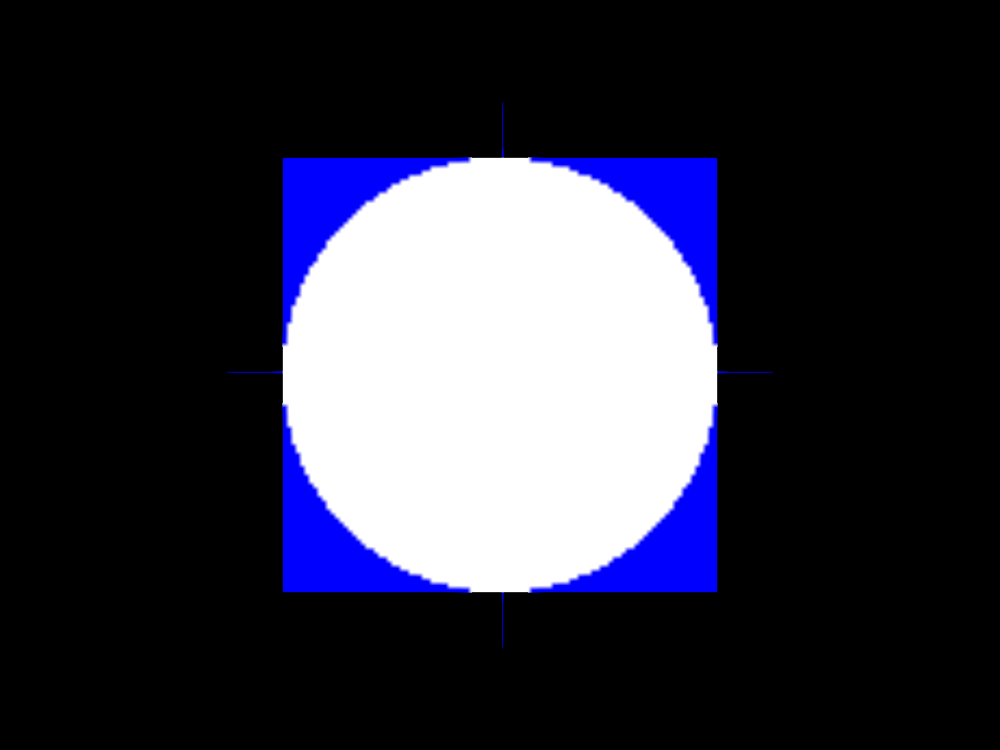

Note
Go to the end to download the full example code.
3D Image Slicer#
This example demonstrates how to use the slicer actor to visualize 3D data in a 2D slice view. The slicer actor allows you to interactively slice through a 3D volume and visualize the resulting 2D slices.
we will use the slicer actor to visualize a 3D volume where we generate a cube with a sphere inside it. The cube is filled with blue color, and the sphere is filled with white color. We will add event handlers to allow the user to interact with the slices
Then, we will create a 3D volume slicer from MNI template present in DIPY’s data. The user can pick a voxel in the slice to get its intensity value and use arrow keys to navigate through the slices.
import numpy as np
from fury import actor, window
from fury.actor import get_slices, show_slices
from fury.lib import EventType
from dipy.data import read_mni_template
Create a 3D cube with a sphere inside it. This example demonstrates how to create a 3D cube with a sphere inside it and visualize it using the slicer actor. The cube is filled with blue color, and the sphere is filled with white color. The user can interactively slice through the cube and visualize the resulting 2D slices.
size = 100
cube = np.zeros((size, size, size, 3), dtype=np.float32)
cube[..., 2] = 1 # Set blue color for the cube
# Create coordinate grids
x, y, z = np.indices((size, size, size))
center = (size - 1) / 2
# Calculate distances from center
distances = np.sqrt((x - center) ** 2 + (y - center) ** 2 + (z - center) ** 2)
# Create sphere (white)
sphere_mask = distances <= size // 2
cube[sphere_mask] = [1, 1, 1]
Create a slice actor for the cube and add it to the scene.
slicer_actor = actor.data_slicer(cube)
scene = window.Scene()
scene.add(slicer_actor)
Create a function to handle key events and navigate through the slices. The user can use the arrow keys to move up and down through the slices. The get_slices function retrieves the current slice positions, and the show_slices function updates the displayed slices based on the new positions. The show_m.render() function is called to update the scene after each key event.
def handle_key_event(event):
position = get_slices(slicer_actor)
if event.key == "ArrowUp":
position += 1
elif event.key == "ArrowDown":
position -= 1
bounds = slicer_actor.get_bounding_box()
position = np.maximum(bounds[0], position)
position = np.minimum(bounds[1], position)
show_slices(slicer_actor, position)
show_m.render()
Add event handlers to the slice actor for key events.
show_m = window.ShowManager(scene=scene, title="FURY Cube Slicer Example")
show_m.renderer.add_event_handler(handle_key_event, EventType.KEY_DOWN)
<function handle_key_event at 0x7f02340bcc20>
Start the show manager to display the scene and allow interaction.
show_m.start()

Let’s read the 3D data from dipy and check the shape of the data. The data also has an affine transformation matrix that maps the voxel coordinates to world coordinates.
nifti = read_mni_template()
data = np.asarray(nifti.dataobj)
affine = nifti.affine
[2026-08-10 15:29:51][dipy] INFO: Creating new folder /home/runner/.dipy/mni_template
[2026-08-10 15:29:51][dipy] INFO: Data size is approximately 70MB
[2026-08-10 15:29:51][dipy] INFO: Downloading "mni_icbm152_t2_tal_nlin_asym_09a.nii" to /home/runner/.dipy/mni_template
[2026-08-10 15:29:51][dipy] INFO: From: https://ndownloader.figshare.com/files/5572676?private_link=4b8666116a0128560fb5
0%| | 0/1060 MB [00:00]
0%| | 4/1060 MB [00:00]
1%| | 12/1060 MB [00:00]
3%|▎ | 27/1060 MB [00:00]
5%|▍ | 52/1060 MB [00:00]
9%|▉ | 93/1060 MB [00:00]
15%|█▌ | 164/1060 MB [00:00]
27%|██▋ | 285/1060 MB [00:00]
48%|████▊ | 505/1060 MB [00:01]
85%|████████▍ | 900/1060 MB [00:01]
100%|██████████| 1060/1060 MB [00:01]
[2026-08-10 15:29:55][dipy] INFO: Downloading "mni_icbm152_t1_tal_nlin_asym_09a.nii" to /home/runner/.dipy/mni_template
[2026-08-10 15:29:55][dipy] INFO: From: https://ndownloader.figshare.com/files/5572673?private_link=93216e750d5a7e568bda
0%| | 0/1060 MB [00:00]
0%| | 4/1060 MB [00:00]
1%| | 11/1060 MB [00:00]
2%|▏ | 25/1060 MB [00:00]
5%|▍ | 48/1060 MB [00:00]
8%|▊ | 89/1060 MB [00:00]
14%|█▍ | 151/1060 MB [00:00]
26%|██▌ | 273/1060 MB [00:00]
47%|████▋ | 497/1060 MB [00:01]
86%|████████▌ | 914/1060 MB [00:01]
100%|██████████| 1060/1060 MB [00:01]
[2026-08-10 15:29:57][dipy] INFO: Downloading "mni_icbm152_t1_tal_nlin_asym_09c_mask.nii" to /home/runner/.dipy/mni_template
[2026-08-10 15:29:57][dipy] INFO: From: https://ndownloader.figshare.com/files/5572670?private_link=33c92d54d1afb9aa7ed2
0%| | 0/1042 MB [00:00]
0%| | 4/1042 MB [00:00]
1%| | 11/1042 MB [00:00]
3%|▎ | 27/1042 MB [00:00]
5%|▌ | 53/1042 MB [00:00]
9%|▉ | 98/1042 MB [00:00]
17%|█▋ | 180/1042 MB [00:00]
33%|███▎ | 343/1042 MB [00:00]
64%|██████▍ | 670/1042 MB [00:01]
100%|██████████| 1042/1042 MB [00:01]
[2026-08-10 15:30:01][dipy] INFO: Downloading "mni_icbm152_t1_tal_nlin_asym_09c.nii" to /home/runner/.dipy/mni_template
[2026-08-10 15:30:01][dipy] INFO: From: https://ndownloader.figshare.com/files/5572661?private_link=584319b23e7343fed707
0%| | 0/1042 MB [00:00]
0%| | 4/1042 MB [00:00]
1%|▏ | 14/1042 MB [00:00]
3%|▎ | 30/1042 MB [00:00]
6%|▌ | 63/1042 MB [00:00]
12%|█▏ | 124/1042 MB [00:00]
23%|██▎ | 241/1042 MB [00:00]
39%|███▉ | 411/1042 MB [00:00]
61%|██████ | 635/1042 MB [00:01]
95%|█████████▌| 994/1042 MB [00:01]
100%|██████████| 1042/1042 MB [00:01]
[2026-08-10 15:30:03][dipy] INFO: Files successfully downloaded to /home/runner/.dipy/mni_template
Let’s check the shape of the data and the affine transformation matrix.
print(data.shape)
print(affine)
(197, 233, 189)
[[ 1. 0. 0. -98.]
[ 0. 1. 0. -134.]
[ 0. 0. 1. -72.]
[ 0. 0. 0. 1.]]
Create volume_slicer actor to visualize the 3D data as XY, YZ and XZ slices.
slicer_actor = actor.volume_slicer(data, affine=affine, depth_write=True)
Create a scene and add the slicer actor to it.
scene = window.Scene()
scene.add(slicer_actor)
Create a function to handle the pick event and print the intensity of the voxel that was clicked. The event contains information about the picked voxel, including its index and intensity value.
def handle_pick_event(event):
info = event.pick_info
intensity = np.asarray(info["rgba"].rgb).mean()
print(f"Voxel {info['index']}: {intensity:.2f}")
Add event handlers to the slicer actor for picking and key events.
slicer_actor.add_event_handler(handle_pick_event, EventType.POINTER_DOWN)
show_m = window.ShowManager(scene=scene, title="FURY MNI Template Slicer Example")
show_m.renderer.add_event_handler(handle_key_event, EventType.KEY_DOWN)
show_m.show_axes_gizmo()
Start the show manager to display the scene and allow interaction.
show_m.start()
Total running time of the script: (0 minutes 35.929 seconds)